01 / the search
She wandered off.
So it went looking.
Out of view for a while? The camera sweeps the room by itself, starting where it already points so it doesn't swing around for nothing, and stops the moment it sees her. You can also tap Find. This search took 12 seconds.
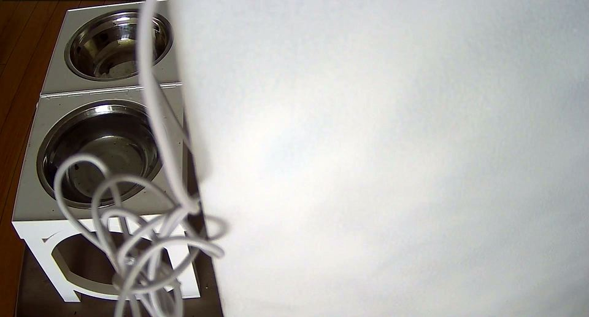
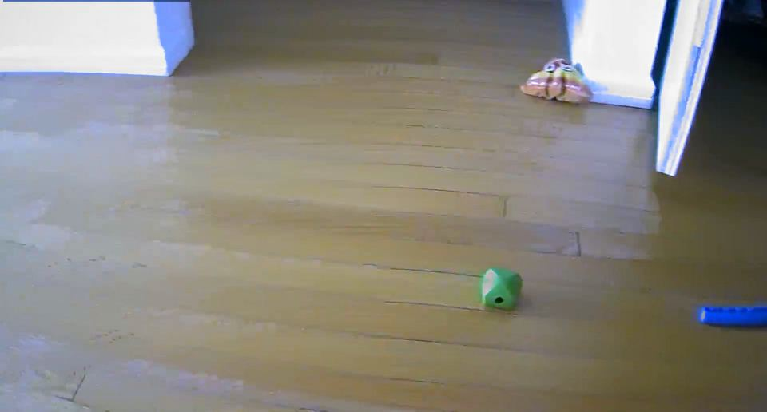
- found her · 12 s
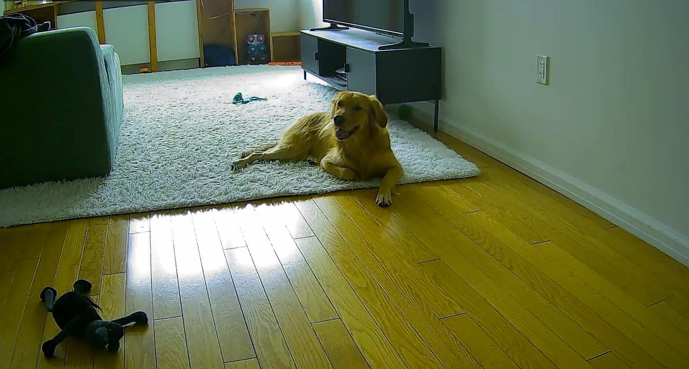
02 / the toy problem
Dog-shaped isn't the same as your dog.
A small detector flags anything that looks like a dog. Then a second model, trained on pictures from your camera, decides whether it's actually her. Same frame, two answers. Plush toys don't set off the search, and they don't get counted in her day.
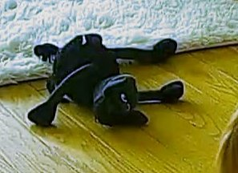
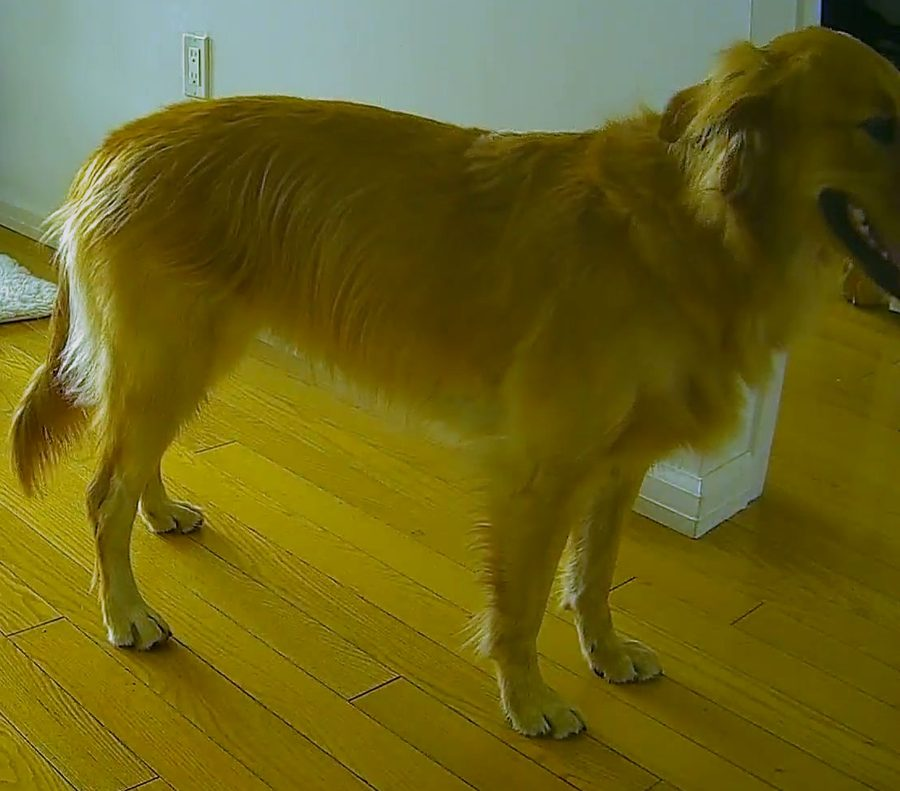
03 / what it costs to run
- $5
- a month for the server. That's the whole bill.
- 5%
- of one CPU core, on a 512 MB machine.
- 6h
- of rolling video, kept on your server.
- 0
- ports opened at home. The camera dials out over WireGuard.
04 / her day
Her whole day,
minus the boring parts.
Today lists the moments she was in view, her naps, when she was up and about, and every bark. The Diary keeps two weeks, with a highlight reel each night. It pings your phone when she barks or sounds upset, and when the camera goes offline or something blocks the view.
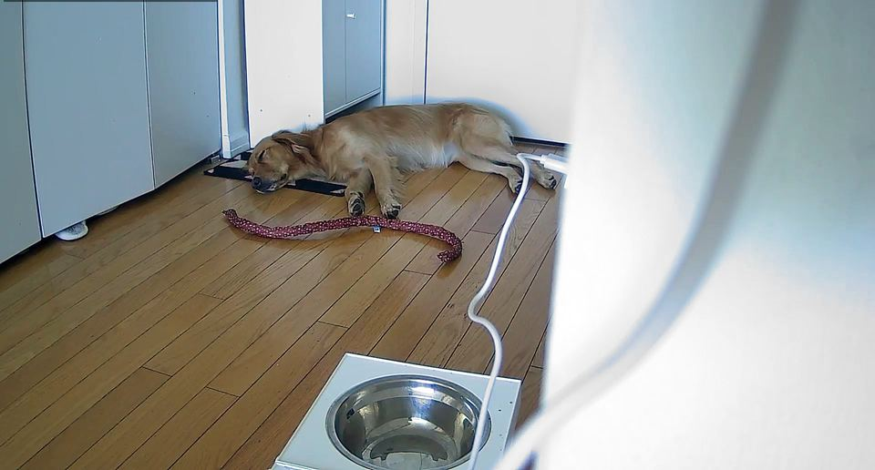
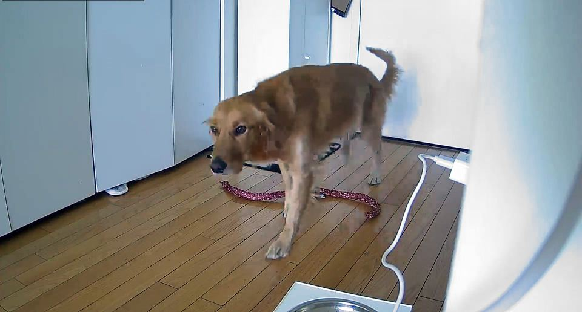
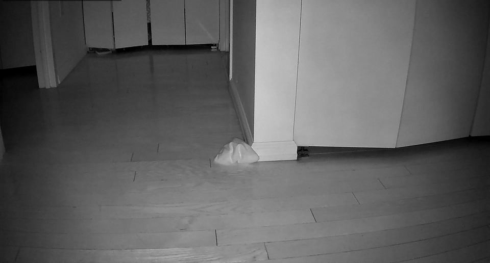
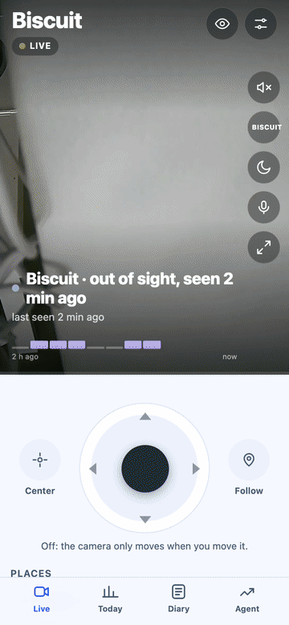
05 / when it gets something wrong
Tell it what went wrong. It fixes it.
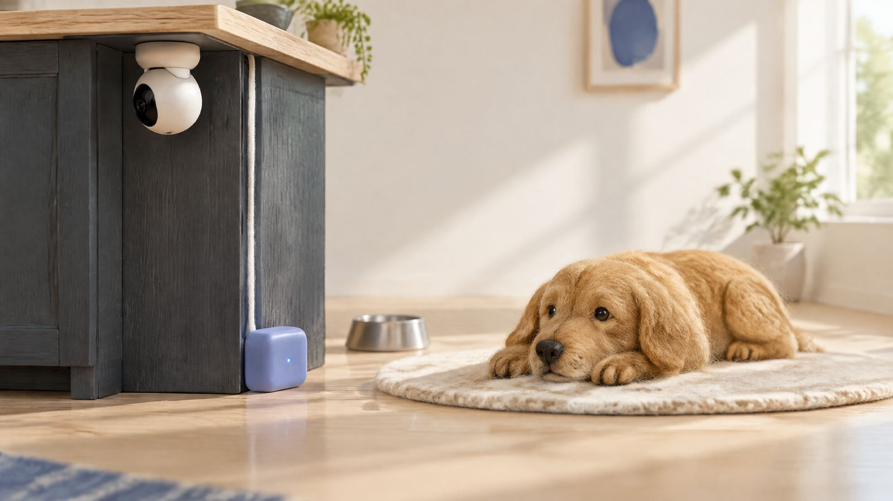
1. In the app, tap Something wrong? and say it in plain words: "the camera moved but didn't say why."
-
2. An optional agent on your computer reads the report and the video around it, writes a fix and a test, and ships it only if checks it can't edit pass. Then it answers you in the app.
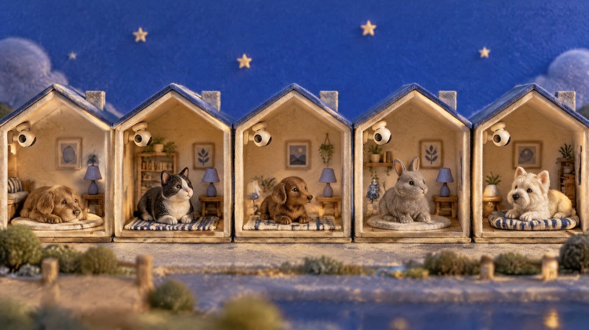
3. Once the fix has run fine on your camera, it's sent here as a pull request. After it's released, every camera installs it overnight.
Felt scenes are illustrations. The agent runs with Claude Code, and everything else works without it.
06 / one minute
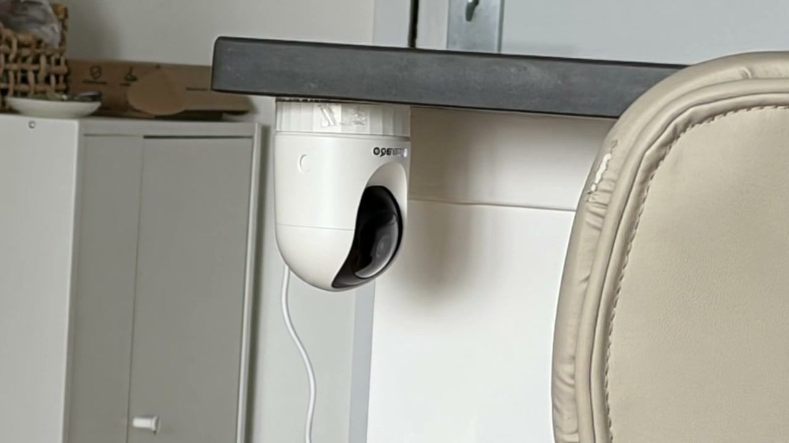
07 / set it up
One evening, one camera, one command.
- A pan/tilt camera that runs Thingino, the open firmware. We use a Cinnado D1.
- A small server with Ubuntu 24.04 and a public IP. An AWS Lightsail nano is plenty.
- A Mac or Linux laptop for the installer. No coding, but you'll type in a terminal.
git clone https://github.com/crimeacs/OpenPetCam.git cd OpenPetCam ./setup
./setup asks for the server and its SSH key, installs everything, and tells you exactly what to type into
the camera's WireGuard page. Then open the address on your phone and add it to the Home Screen.
It updates itself every night and rolls back if an update goes wrong.
Step by step: the Thingino guide.
08 / also in there
- Live video with sound
- Bark and distress-sound alerts
- Camera offline, view blocked
- Infrared at night
- Nightly highlight reel
- Timelapse
- Family invites by one-time link
- Privacy switch: picture and mic off
- Nightly updates, auto rollback
- Three themes, light and dark
- Your pet's name, set in the app
- Agent dashboard with goals
09 / questions
Is there a pet camera without a subscription?
Yes, this one. The software is free and open source. You pay for a small server you own (an AWS Lightsail nano is about $5 a month) and a Thingino-compatible camera, once.
Which cameras work?
Pan/tilt Wi-Fi cameras supported by Thingino. Ours is a Cinnado D1 (Ingenic T23N). Other models may need their pan and tilt calibrated once with tools/calibrate.py. See the Thingino guide.
Does it work on iPhone and Android?
Yes. Open the address in Safari or Chrome and add it to the Home Screen. It runs full screen and sends notifications. There's no App Store step.
How does it tell my dog from a toy?
A small detector (YOLOX-nano) proposes anything dog-like. A second model, trained on pictures from your own camera, decides whether it's your pet. On our camera it gave the plush toy 0.00 and the dog 0.99 in the same frame.
Who can see my video?
You, and the people you invite. Video goes from the camera to your server over WireGuard and nowhere else. One tap turns off the picture and the microphone. This website uses anonymous, cookieless analytics.
What about cats?
It's built and tested on a dog so far. Cats need different classes in the detector and sound model. If you have a cat and some patience, that's a great first contribution.
Do I need the agent?
No. The camera, app and alerts work on their own. The agent is optional, runs on your computer with Claude Code, and turns your reports into tested fixes.
Bring your dog.
OpenPetCam gets better every time someone tells us what their pet did that the camera got wrong. You don't need a camera or code to help.